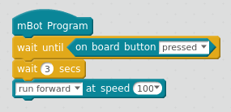
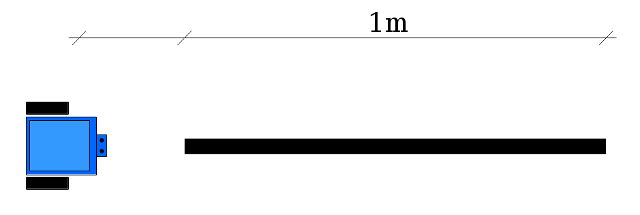
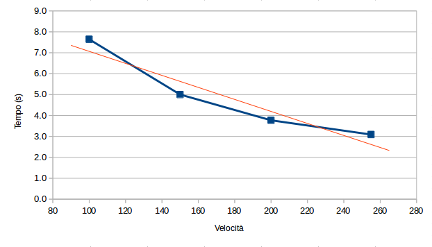
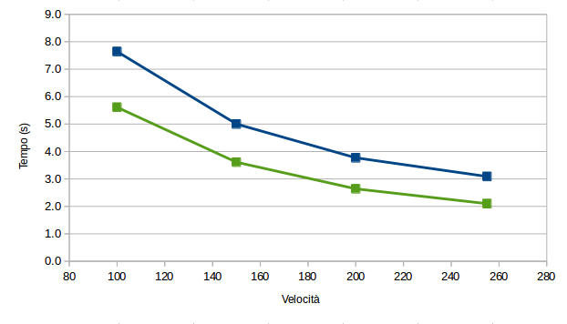
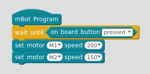
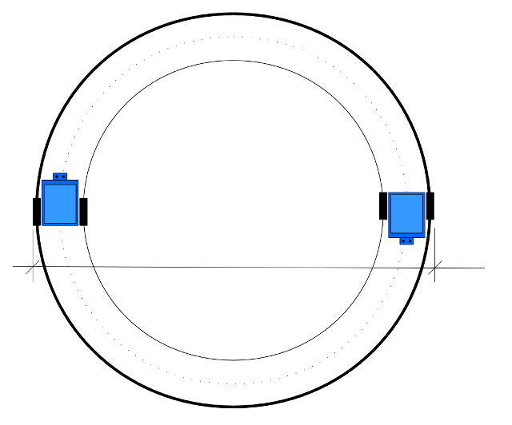

risorse | analisi del moto di mbot
È possibile controllare con precisione il moto di un mBot? In particolare, è possibile fargli percorrere delle traiettorie predefinite?
Il movimento del robot è determinato dalle velocità di rotazione dei due motori di cui è dotato. Trattandosi di due motori indipendenti, già si può supporre che il controllo applicabile sarà limitato, non potendo prescindere dalle lievi differenze che di certo li caretterizzano. Su percorsi brevi tuttavia qualcosa si dovrebbe riuscire ad ottenere.
mBlock non ha un comando che consente di far coprire al robot una data distanza, qualcosa tipo “run forward for 10 cm”. Manca anche un comando per effettuare una sterzata con un'angolazione precisa, per esempio “turn left 90° degrees”. Il solo comando relativo al moto è “set motor … at speed …” — trascurando la sua versione semplificata “run forward at speed …” —, che consente solamente il controllo dell'attivazione (indipendente) dei due motori. Gli unici parametri sui cui si può agire sono dunque la velocità di rotazione e il tempo di attivazione di ciascun motore. Di più, il valore di velocità è relativo, essendo 0 il valore di arresto e ±255 quello associato alla velocità massima nei due sensi di rotazione avanti/indietro
Ciò posto, è possibile realizzare delle procedure che consentano un controllo più preciso dei movimenti del robot, sia in termini di tratti rettilinei che di archi di circonferenza percorsi?
Il primo passo per la costruzione del blocco “run forward for … cm” è determinare la velocità lineare del robot espressa in cm/s in funzione del valore numerico relativo applicato ai motori con il comando “set motor … at speed …”.
mBot monta dei motori in corrente continua da 9V non calibrati con velocità massima a vuoto di 185giri/min, come chiarisce il supporto tecnico nella discussione mBot motors not in sync sul forum ufficiale:
The motor speed is in term of rpm. But in mBlock program, set to speed 100 doesn’t mean that the motor speed is 100 rpm, the 100 is actual a proportion, its actual speed is determined by the load and power provided by the Mainboard. Take this condition as example: the mainboard can provide full power to the motor and there is no load on a motor which has 185 ±10%rpm no-load speed, when you set to speed 100, the actual speed of this motor is 100/255*185 (rpm).
Notare il margine di incertezza sulla velocità di rotazione: ±10%.
Per determinare la corrispondenza tra i valori di velocità impostati nel programma mBlock e le velocità lineari effettive si può misurare il tempo di percorrenza del robot di 1m a varie velocità, per esempio attraverso il seguente programma:
Il programma per la determinazione della velocità lineare
Eseguendo 5 misurazioni per ognuna delle velocità utilizzate (rispettivamente 255, 200, 150 e 100), si sono ottenuti i seguenti tempi di percorrenza:
| Velocità | t1 | t2 | t3 | t4 | t5 | tmedio |
|---|---|---|---|---|---|---|
| 255 | 3.15 | 3.08 | 3.10 | 3.08 | 3.04 | 3.09 |
| 200 | 3.75 | 3.85 | 3.77 | 3.78 | 3.71 | 3.77 |
| 150 | 4.99 | 5.00 | 4.97 | 5.00 | 5.05 | 5.00 |
| 100 | 7.55 | 7.64 | 7.56 | 7.76 | 7.70 | 7.64 |
Per escludere possibili spurie dovute allo spunto iniziale del robot conviene far partire il robot una ventina di centimetri prima della zona di misurazione:
Misurazione del tempo di percorrenza di 1 metro lineare
Considerando che il diametro delle ruote di mBot è di circa 6.5cm, si determina facilmente la velocità di rotazione dei motori:
giri/min = 100 / (π × druota) / tmedio × 60
La tabella perciò diventa:
| Velocità | t1 | t2 | t3 | t4 | t5 | tmedio | giri/min |
|---|---|---|---|---|---|---|---|
| 255 | 3.15 | 3.08 | 3.10 | 3.08 | 3.04 | 3.09 | 95.09 |
| 200 | 3.75 | 3.85 | 3.77 | 3.78 | 3.71 | 3.77 | 77.90 |
| 150 | 4.99 | 5.00 | 4.97 | 5.00 | 5.05 | 5.00 | 58.74 |
| 100 | 7.55 | 7.64 | 7.56 | 7.76 | 7.70 | 7.64 | 38.49 |
Siamo quindi ben al di sotto delle velocità di rotazione nominali. Certo, c'è da considerare che i motori non stanno girando a vuoto, che il livello di carica delle batterie potrebbe non essere ottimale (seppur cariche, si tratta comunque di batterie ricaricabili da 2100mAh con alle spalle decine di cicli di ricarica), e che bisogna tener conto dei vari attriti meccanici, non ultimo quello di rotolamento sul pavimento. Ciò detto, vale la pena chiedersi se almeno i tempi di percorrenza sono proporzionali alla velocità impostata nel programma mBot:
Linearità tempo di percorrenza/velocità impostata
La dipendenza non è lineare, per cui non è facile stabilire a priori quali debbano essere i tempi di accensione dei motori per far percorrere al robot una distanza prefissata ad una data velocità. Ci si dovrà perciò rassegnare escogitando qualche euristica o procedendo per tentativi.
La scelta delle batterie incide sul tempo di percorrenza? Sostituendo il pacco batterie con una serie di accumulatori più prestanti (2500mAh) e praticamente nuovi, avendo subito appena un paio di cicli di ricarica, i tempi di percorrenza si riducono sensibilmente, anche se la non-linearità permane — cfr. traccia verde:
Effetto delle batterie sul tempo di percorrenza
Per completezza, i dati raccolti con il pacco di batterie più potente:
| Velocità | t1 | t2 | t3 | t4 | t5 | tmedio | giri/min |
|---|---|---|---|---|---|---|---|
| 255 | 2.08 | 2.16 | 2.09 | 2.10 | 2.07 | 2.10 | 139.92 |
| 200 | 2.73 | 2.64 | 2.60 | 2.62 | 2.61 | 2.64 | 111.30 |
| 150 | 3.61 | 3.64 | 3.61 | 3.61 | 3.58 | 3.61 | 81.39 |
| 100 | 5.59 | 5.61 | 5.61 | 5.68 | 5.57 | 5.61 | 52.36 |
Venendo a mancare la relazione tra la velocità lineare con cui si muove robot e quella applicata ai suoi motori non si può sperare di riuscire a far percorrere a mBot degli archi di cerchio di lunghezza predefinita. Si può però forse controllarne almeno il raggio di curvatura.
mBot effettua le sterzate impostando velocità di rotazione diverse sulle due ruote. È possibile determinare il raggio delle curve tracciate dal robot note le velocità di rotazione dei suoi motori? Il seguente programma fa muovere mBot su una traiettoria circolare:
Il programma per la determinazione del raggio di curvatura
La tabella sottostante raccoglie i diametri delle circonferenze descritte dal robot al variare delle velocità di rotazione dei due motori (dm sta per diametro misurato):
| Velocità M1 | Velocità M2 | rapporto | dm (cm) |
|---|---|---|---|
| 200 | 100 | 2:1 | 46 |
| 100 | 50 | 2:1 | 46 |
| 200 | 67 | 3:1 | 34.5 |
| 200 | 50 | 4:1 | 31 |
| 100 | 25 | 4:1 | n/a(*) |
| 200 | 25 | 8:1 | n/a(*) |
| 100 | 12 | 8:1 | n/a(*) |
| 200 | 132 | 3:2 | 68.5 |
| 200 | 150 | 4:3 | 93 |
| 200 | 0 | ∞ | 23 |
| 200 | -200 | -1 | 13.5 |
(*) la velocità per M2 è inferiore al valore di spunto e la ruota non gira.
Il diametro misurato riportato in tabella è quello della circonferenza descritta dal bordo esterno della ruota esterna ed evidenziato nella figura sottostante, che è il più semplice da rilevare:
Circonferenze caratteristiche di una traiettoria circolare
Quel che interessa è il rapporto tra la circonferenza descritta dalla ruota esterna (in neretto) e quella descritta dalla ruota interna (linea sottile). Considerando che l'interasse delle ruote è di 11.5cm e la larghezza di uno pneumatico è all'incirca 1.5cm, i conti son presto fatti:
P = 1.5 I = 11.5 dest = dm - P dint = dest - 2I
In questo caso i risultati sono decisamente promettenti. Il rapporto tra le circonferenze percorsa dalle due ruote è prossimo a quello tra le relative velocità:
| Velocità M1 | Velocità M2 | rapporto | dest (cm) | dint (cm) | dest/dint |
|---|---|---|---|---|---|
| 200 | 100 | 2:1 | 44.5 | 21.5 | 2.07 |
| 100 | 50 | 2:1 | 44.5 | 21.5 | 2.07 |
| 200 | 67 | 3:1 | 33.0 | 10.0 | 3.30 |
| 200 | 50 | 4:1 | 39.5 | 6.5 | 4.54 |
| 200 | 132 | 3:2 | 67.0 | 44.0 | 1.52 |
| 200 | 150 | 4:3 | 91.5 | 68.5 | 1.34 |
| 200 | 0 | ∞ | 21.5 | -1.5 | --- |
| 200 | -200 | -1 | 12.0 | -11 | -1.09 |
Si può determinare le velocità da applicare ai due motori per ottenere il raggio di curvatura desiderato riferito alla circonferenza che passa per il baricentro del robot (cfr. linea tratteggiata in figura). Indicando con R il raggio della curva che si vuole impostare, espresso in centimetri, il rapporto tra le velocità di rotazione delle due ruote dovrà essere pari al rapporto tra le circonferenze descritte dalle ruote del robot:
vest / vint = 2π(R + I/2) / 2π(R - I/2)
che semplificando diventa:
vest / vint = (2R + I) / (2R - I)
Se ad esempio si volesse effettuare una curva di raggio 16.5cm — corrispondente ad un diametro della circonferenza descritta dalla ruota più esterna pari a 44.5cm — il rapporto tra le velocità dovrà essere:
vest / vint = (33 + 11.5) / (33 - 11.5) = 44.5 / 21.5 = 2
che corrisponde con quanto riportato nella prima riga della tabella.
Noto il rapporto tra le velocità di rotazione delle due ruote è possibile determinare il raggio della curva associata. Indicando con r il rapporto tra le due velocità (r > 1) e con D il diametro della curva risultante, si ottiene:
r = (D + I) / (D - I)
Moltiplicando per (D - I) e sviluppando:
r (D - I) = (D + I) rD - rI = D + I
Raggruppando i termini su D e I:
rD - D = rI + I D (r - 1) = I (r + 1)
Si ottiene infine:
D = I (r + 1) / (r - 1)
Ad esempio, se il rapporto tra le velocità è r = 2, si ricava:
D = 11.5 * 3 / 1 = 34.5
Anche in questo caso il risultato è sufficientemente in accordo con quanto precedentemente ricavato, 33cm.
Pagina modificata il 30/04/2018